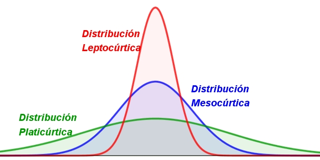

Análisis de datos¶
Función |
Significado |
|---|---|
|
Resumen estadístico |
|
Mínimo |
|
Máximo |
|
Media aritmética |
|
Mediana |
|
Rango |
|
Desviación estándar |
|
Varianza |
|
Covarianza |
|
Coeficiente de correlación |
|
Percentil del 5% |
|
Percentil del 80% |
|
Asimetría |
|
Curtosis |
Cargar datos:
datos = read.csv("Datos.csv", sep = ";", dec = ",", header = T)
datos
| Nombre | Edad | Género | Peso | Estrato |
|---|---|---|---|---|
| <fct> | <int> | <fct> | <dbl> | <int> |
| Ángela | 22 | F | 62.5 | 3 |
| José | 10 | M | 75.8 | 4 |
| Juan | 15 | M | 54.4 | 3 |
| Manuela | 35 | F | 73.6 | 3 |
| Maribel | 50 | F | 70.0 | 5 |
| Antonio | 45 | M | 180.0 | 4 |
| Alicia | 1 | F | 15.7 | 1 |
| Luis | 32 | M | 103.5 | 5 |
summary:¶
summary(datos$Peso)
Min. 1st Qu. Median Mean 3rd Qu. Max.
15.70 60.48 71.80 79.44 82.72 180.00
La función basicStats()calcula más estadíticos que summary().
Primero se instala el siguiente paquete: install.packages("fBasics")
library(fBasics)
basicStats(datos$Peso)
| X..datos.Peso | |
|---|---|
| <dbl> | |
| nobs | 8.000000 |
| NAs | 0.000000 |
| Minimum | 15.700000 |
| Maximum | 180.000000 |
| 1. Quartile | 60.475000 |
| 3. Quartile | 82.725000 |
| Mean | 79.437500 |
| Median | 71.800000 |
| Sum | 635.500000 |
| SE Mean | 16.799457 |
| LCL Mean | 39.713096 |
| UCL Mean | 119.161904 |
| Variance | 2257.774107 |
| Stdev | 47.516041 |
| Skewness | 0.874260 |
| Kurtosis | -0.067399 |
Medidas de tendencia central:¶
Media.
Mediana.
Moda.
# Media:
mean(datos$Peso)
# Mediana:
median(datos$Peso)
La moda es el valor que más se repite, es decir, el de mayor frecuencia.
Con la función table() se calculan las frecuencias.
table(datos$Estrato)
1 3 4 5
1 3 2 2
El Estrato 3 es el de mayor frecuencia. Esta es la moda, entonces la moda es el máximo de las frecuencias.
moda <- max(table(datos$Estrato))
moda
Medidas de dispersión:¶
Rango.
Varianza.
Desviación estándar.
Coeficiente de variación.
# Rango:
range(datos$Peso)
- 15.7
- 180
# Varianza:
var(datos$Peso)
# Desviación estándar:
sd(datos$Peso)
# Desviación estándar:
sqrt(var(datos$Peso))
# Coeficiente de variación:
coef_var <- sd(datos$Peso)/mean(datos$Peso)
coef_var
Medidas de posición:¶
Cuartiles.
Los diagramas de cajas y bigotes es una forma visual de analizar las medidas de posición.
# Cuartiles.
quantile(datos$Peso)
- 0%
- 15.7
- 25%
- 60.475
- 50%
- 71.8
- 75%
- 82.725
- 100%
- 180
# Q1 - primer cuartil - percentil del 25%:
quantile(datos$Peso, 0.25)
# Q2 - segundo cuartil - percentil del 50%:
quantile(datos$Peso, 0.50) # Este es el valor de la mediana.
# Q3 - tercer cuartil - percentil del 75%:
quantile(datos$Peso, 0.75)
Rango intercuatil (RIC):
RIC = quantile(datos$Peso, 0.75) - quantile(datos$Peso, 0.25)
RIC # Rango de un 50%
RIC = as.numeric(RIC) # para quitarle la etiqueta de 75%
RIC
Medidas de forma:¶
Sesgo (asimetría): skewness.
Curtosis: kurtosis.

# Asimetría:
skewness(datos$Peso) # Resultados: sesgo positivo.
# Curtosis:
kurtosis(datos$Peso) # Resultado: platicúrtica.